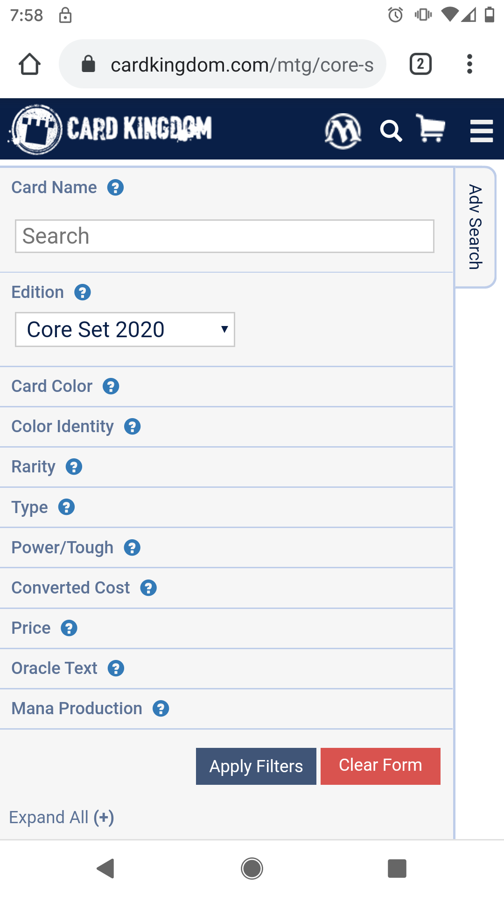
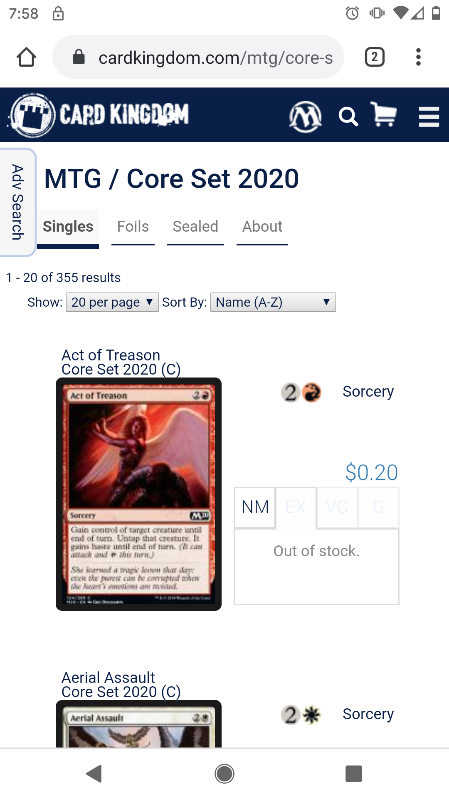

Hick's Law
Card Kingdom
cardkingdom.com
 
Here we see that Card Kingdom, a site to purchase Magic The Gathering cards, has a great setup to combat Hick's Law. The first image shows the filter system that can be used to narrow what cards are brought up. The second image shows how even when looking at the cards there is a limmited amout of "choices" as far as making a purchase. There are 4 tabs representing the 4 main card qualities ands then you can add it to your cart.
Visual Hierarchy
Wizards of the Coast
gatherer.wizards.com
Gatherer is a site used to look up magic cards, in order to find cards of specific types, keywords, and also to see official rulings. The most prominent features of the site are the most important, the white form box where alll search terms are entered and the search button which initiates the query of the card database.
White Space
Wizards of the Coast
magic.wizards.com
This the main site for the card game Magic the Gathering, published by Wizards of the Coast. It's the source of product descriptions, rules clarifications, and everything you need to know about the game of Magic. Here we see very defined white spaces between the options, accentuating each seperate thing.